Introduction to Fusion360
This week we were tasked with learning fusion360 - a CAD software. My only experience with CAD was an adventure in 5th grade when I was told to create a gear for the robotics club. It was probably one of the most misearble experiences I have
had in the world of engineering. But, hopefully the 10 years since has been enough time for me to look at it with fresh eyes.
I first spent some time tinkering around and just made a little toy robot arm, its hand is basically knockoff lego hand, but I wasnt designing for functionality. Honestly a pretty good first dip back in. I focused heavily on using constraints here,
which basically allow you to set up "rules" on the design you are making, so that its more than just a drawing. These rules can be that two lines allways have to be parallel, an object has some inherit lenght or anlge, or that 1 object is located at the midpoint of another object,
as well as perhaps most importantly that where two lines or curves meet, that they are stuck together.
With these constraints in place, I am able to do some cool stuff where moving the location of one piece will cause the rest of my object to respond accordingly (see below) which seems like a novelty at the moment, but I am sure that later it will become very useful

Measuring and Modeling
Next up was to do some measuring with calipers (Honestly one of the better inventions to be made), and then model them to scale in Fusion360. I went with my stir spoon from my cocktail setup, as well as a watch face. Using calibers are honestly such
a phenominal experience, probably one of the more satisfying tools to use. Making the spoon was a little wonky because it is extremely long and narrow, but I used the conic curve tool for the first time to make a smooth spoon shape which is neat.


 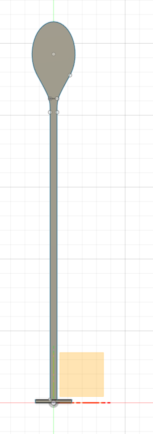
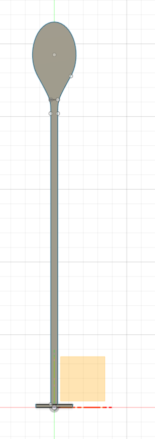
Then I went into actually turning everything into 3d models. This was rather tricky, as I didnt design many aspects of the sketch to be easily adaptable to a 3d model. So I ended up having to do alot of changes towards by sketch to get it ready.
I took advantages of the "revolve" feature alot to make radially symetric objects, as well as the fillet feature to get some nice rounded edges. I think I have alot more work to do in terms of learning the software before I am ready to model
anything complicated in fusion.
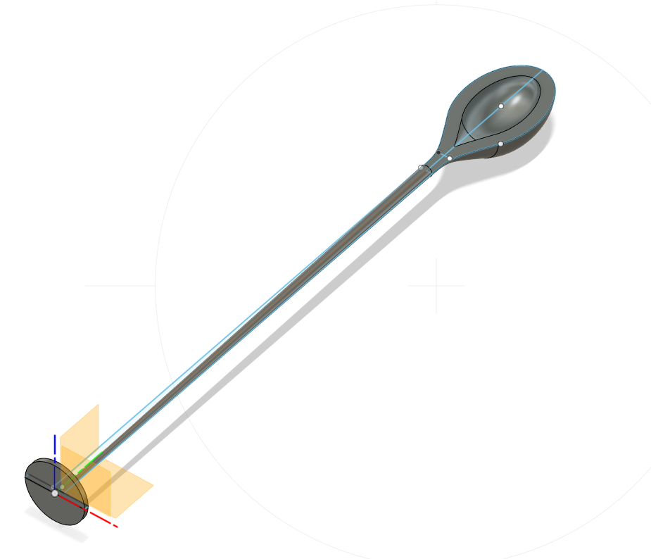
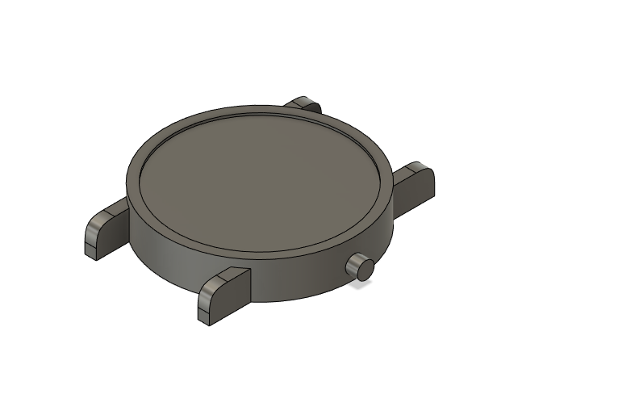
Building a Coaster
Finally, the pinacle of this week's assignment was to Fabrications a few pieces that can press-fit connected to eachother in multiple ways to create some object. I decided I want to build an elevated coaster of sorts - I could use a cooler way to have my
drinks on display, so hopefully this can be a good solution.
I started with a circle and began with cutting out thin rounded slots that I could then use for the inserts. I then discovered the mirroring feature that I used radially, so that I could then have 1 insert get projected around my disk as many times as I
wanted (I am going with 6 for now). I also found out about defining functions for the dimentions of my objects (that way I can more easily change them). The 3 repetative dimentions I need to use are material thickness (currently using cardboard, about
4.06mm), notch width, and notch depth. The great thing about this is that I can change in the settings the dimentions of any of these things, and it will automatically update all of the implimentations of my shapes.
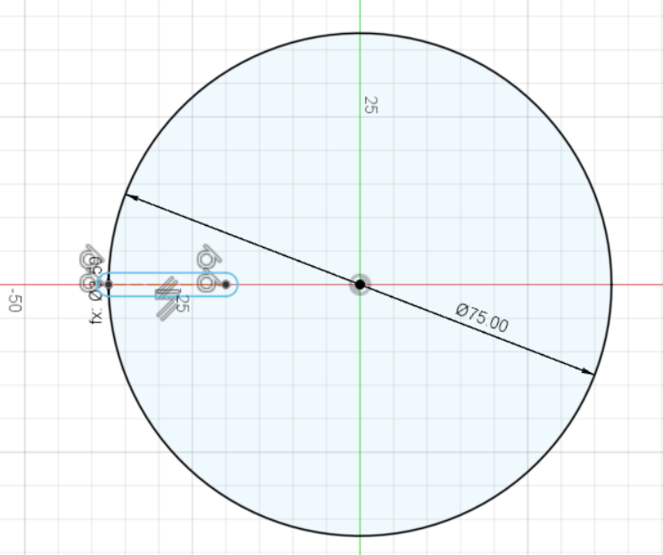
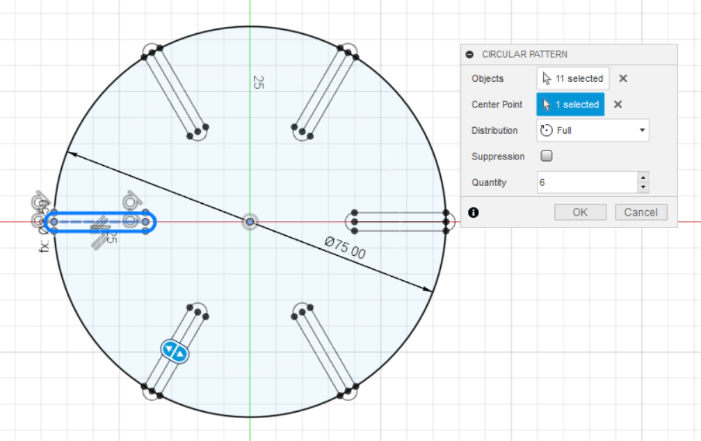
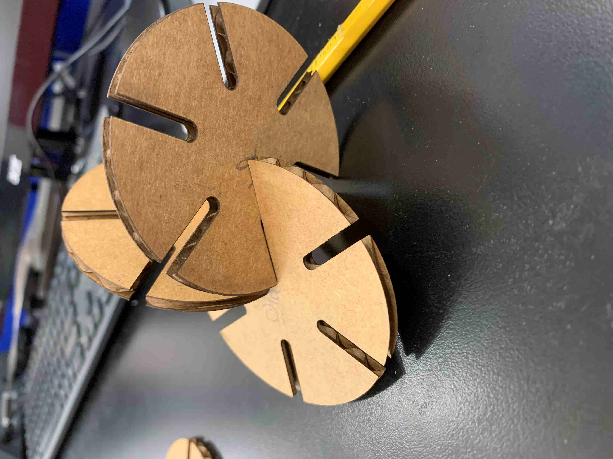
In my first print, i used 4.06mm for my notch width (matching the thickness of the material), and it ended up coming out a little bit loose. This is due to the kerf which is essentially the effect where the lazercutter has to burn some length of material
in the proccess of cutting, thus you must account for that additional thickness in the printing process. I also realized that I made my notch depth a little too large, so that when inserted compeletely, the pieces would consume > 50% of the depth of the
object (this is problematic because it prevents connecting multiple pieces together), so I also had to reduce the depth of the notch
I did that, and I also built a center piece that is essentially a much larger connector piece, that way I can have somewhere to put my cup. This is how things turned out for the second set of prints:
Now with the kerf accurately accounted for (4.02mm) everything fit together perfectly, And I now have a cool 3d figure that can be arranged or deconstructed to prevent my drinks from damaging my desk (although I guess the cardboard might not last too long,
so perhaps a future printing into wood may be a good idea).
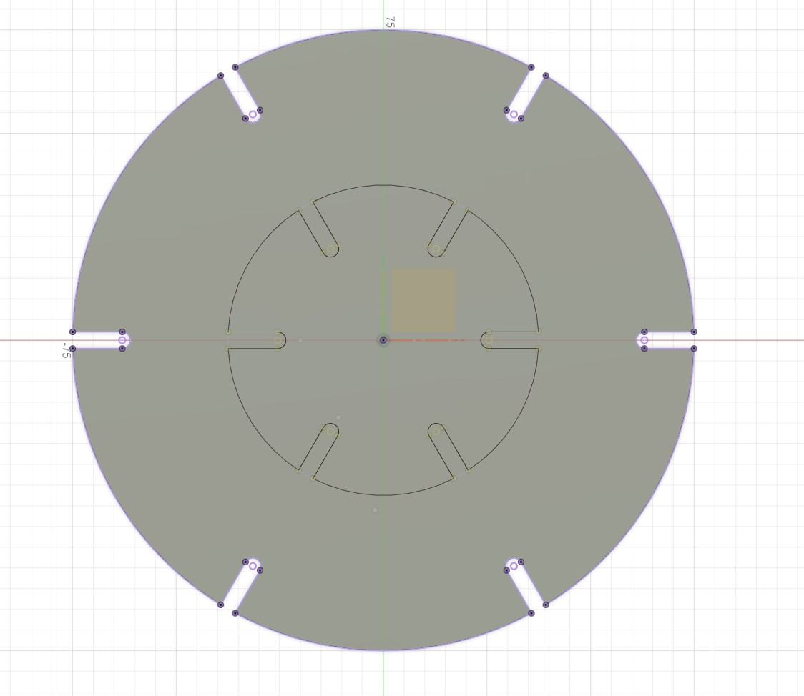
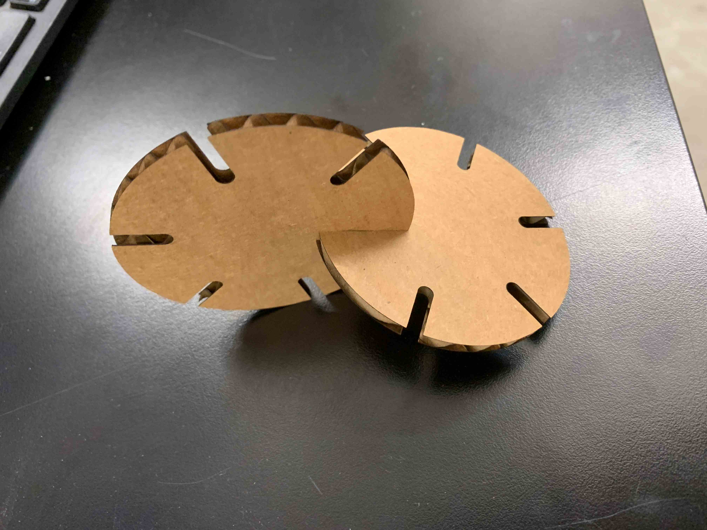
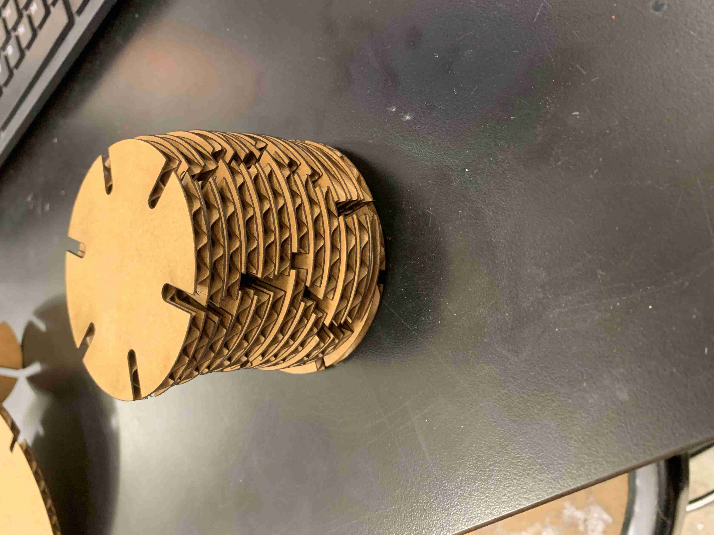
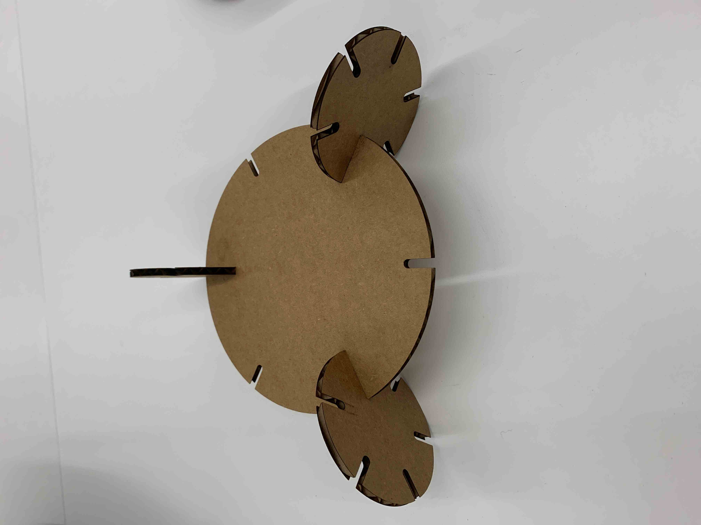